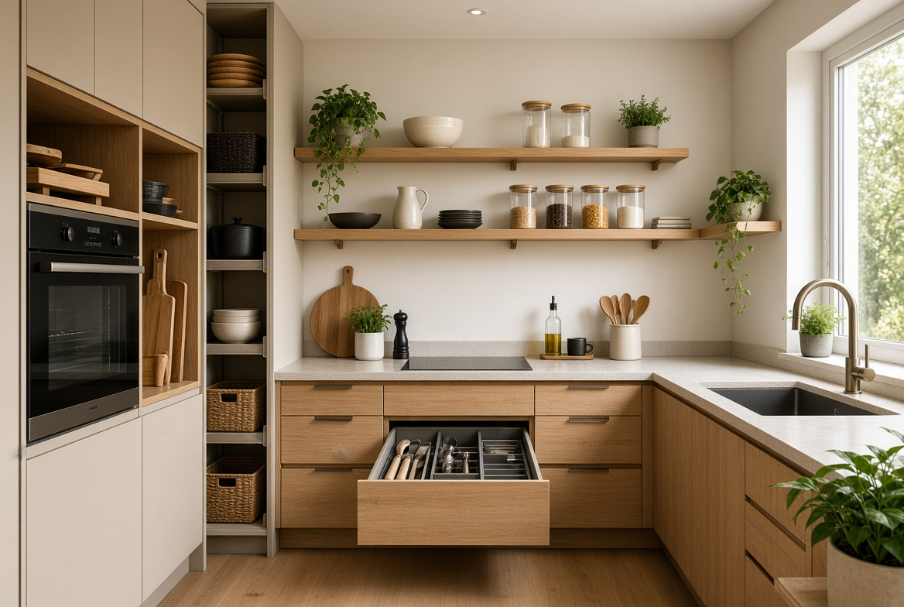
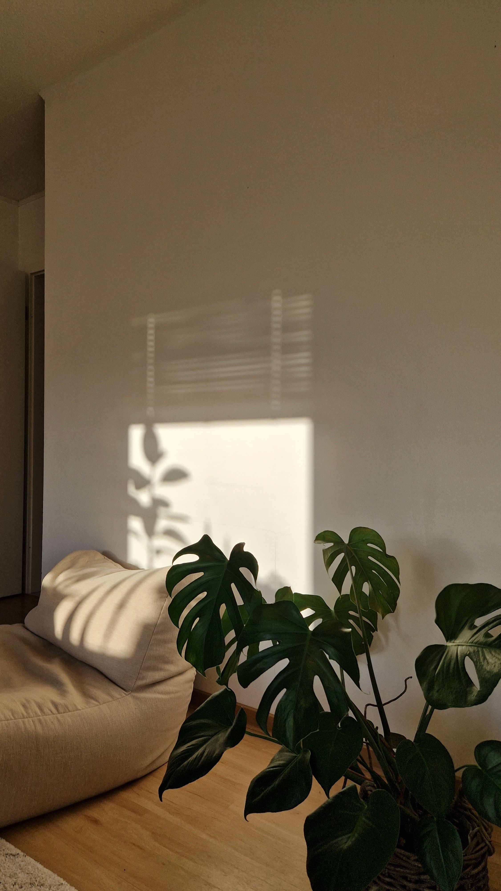

En este artículo
- Mejora la iluminación sin hacer grandes obras
- Utiliza textiles para aportar calidez
- Mantén el orden sin convertir la casa en un espacio rígido
- Añade personalidad con pequeños detalles
- Revisa la distribución antes de comprar nada
- Mejora la casa sin gastar de más
- Encuentra un equilibrio entre comodidad y estilo
- Preguntas frecuentes
- Conclusión
Mejora la iluminación sin hacer grandes obras
La iluminación es uno de los recursos más eficaces para cambiar la sensación de una vivienda sin realizar reformas. Una habitación puede parecer fría si depende de una única luz central, incluso cuando los muebles son bonitos. Incorporar diferentes puntos de luz permite crear capas y adaptar el ambiente a las actividades que se realizan en cada momento.
Combina diferentes puntos
No necesitas iluminar todo con la misma intensidad. Una combinación de luz general, luz de tarea y luz ambiental permite adaptar la habitación sin comprar una gran cantidad de elementos.
Empieza por observar las zonas que utilizas con más frecuencia. Una lámpara de pie junto a un sofá, una luz de apoyo cerca de una mesa o una pequeña luminaria en una esquina pueden añadir profundidad. La luz cálida suele asociarse con ambientes relajados, mientras que una iluminación más intensa puede ser útil en zonas de trabajo o tareas concretas.
La luz natural también cuenta. Mantener las ventanas despejadas, utilizar cortinas que permitan regular la entrada de claridad y colocar espejos estratégicamente puede ayudar a que el espacio se perciba más luminoso durante el día.
Utiliza textiles para aportar calidez
Los textiles tienen una gran capacidad para cambiar la percepción de una habitación. Una manta sobre el sofá, cojines de diferentes texturas, cortinas adecuadas o una alfombra pueden hacer que el espacio se sienta más cómodo sin necesidad de sustituir los muebles principales.
Piensa en la temporada
Puedes cambiar algunos textiles según la época del año en lugar de modificar toda la decoración. Materiales más ligeros pueden funcionar durante los meses cálidos y tejidos más gruesos pueden aportar sensación de refugio cuando hace frío.
No es necesario comprar muchos elementos. Es preferible seleccionar algunas piezas que combinen entre sí y que respondan a las necesidades reales de la habitación. En un salón, por ejemplo, una alfombra puede definir la zona de conversación, mientras que una manta puede aportar comodidad durante las horas de descanso.

Los materiales naturales, cuando encajan con el estilo de la vivienda, pueden aportar una sensación visual agradable. Algodón, lino, lana u otras fibras deben elegirse también teniendo en cuenta la limpieza y el uso cotidiano.
Mantén el orden sin convertir la casa en un espacio rígido
El desorden puede hacer que una vivienda resulte menos acogedora porque dificulta percibir las formas y los espacios. Sin embargo, una casa demasiado vacía o rígidamente organizada también puede parecer poco personal. El objetivo es encontrar un punto intermedio en el que cada objeto tenga un lugar razonable y las superficies puedan utilizarse con facilidad.
Haz que guardar sea sencillo
Si guardar un objeto requiere demasiados pasos, probablemente terminará fuera de su sitio. Las soluciones de almacenamiento deben estar cerca de donde utilizas las cosas y ser fáciles de alcanzar.
Empieza por las zonas que se desordenan con mayor frecuencia. Si las llaves, papeles o accesorios siempre terminan en el mismo lugar, crea una solución sencilla para ellos. Una bandeja, un pequeño mueble o un recipiente pueden evitar que los objetos se dispersen por toda la habitación.
También conviene revisar periódicamente aquello que ya no utilizas. Reducir objetos innecesarios no significa vivir sin pertenencias, sino dejar espacio para las cosas que realmente forman parte de tu vida. Una vivienda más fácil de ordenar suele ser también más fácil de disfrutar.
Añade personalidad con pequeños detalles
Un hogar acogedor no tiene que parecer una fotografía de catálogo. Parte de su atractivo está en mostrar quién vive allí. Fotografías, libros, objetos artesanales, plantas o recuerdos pueden aportar personalidad cuando se utilizan de forma equilibrada.
Elige objetos con significado
Un pequeño número de elementos que realmente te gustan suele aportar más personalidad que muchas piezas compradas únicamente para llenar superficies.

No es necesario comprar decoración nueva para conseguir ese efecto. Reorganizar objetos que ya tienes puede cambiar la composición de una habitación. Agrupar libros por tamaño, colocar una planta junto a una fuente de luz adecuada o crear una pequeña colección de objetos puede dar más intención al conjunto.
Las plantas también pueden contribuir a la sensación de vida en el interior. Elige especies compatibles con la luz disponible y coloca los ejemplares de manera que no dificulten el paso. El objetivo es que la decoración acompañe al espacio, no que lo convierta en un lugar difícil de utilizar.
Revisa la distribución antes de comprar nada
A veces una casa parece poco acogedora no por falta de decoración, sino porque los muebles están mal distribuidos. Sofás demasiado alejados entre sí, mesas que bloquean el paso o muebles grandes en una habitación pequeña pueden hacer que el ambiente resulte incómodo. Antes de gastar dinero, prueba a mover lo que ya tienes.
Mide antes de mover o comprar
Unos minutos con una cinta métrica pueden evitar compras equivocadas. Comprueba el ancho de puertas, pasillos y zonas de paso antes de elegir muebles de gran tamaño.
Busca crear zonas que tengan una función clara. En el salón puede existir un área de conversación; en el dormitorio, una zona de descanso; y en una entrada, un lugar donde dejar objetos al llegar. Definir estas funciones ayuda a que la vivienda sea más intuitiva y cómoda.
La circulación debe permanecer despejada. Si para llegar a una puerta tienes que esquivar constantemente una mesa o un sillón, probablemente la distribución puede mejorar. Una casa acogedora debe ser agradable de mirar, pero también fácil de recorrer.
Mejora la casa sin gastar de más
Crear un hogar acogedor no requiere renovar todos los muebles. De hecho, cambiar demasiadas cosas al mismo tiempo puede hacer que la vivienda pierda coherencia. Es más eficiente identificar qué aspecto produce mayor impacto y trabajar sobre él primero.

Establece prioridades
Haz una lista de tres cambios que mejorarían realmente tu vivienda y empieza por el primero. Esta estrategia evita compras impulsivas y permite comprobar qué funciona antes de seguir gastando.
Una nueva distribución puede ser gratuita. Limpiar visualmente una superficie, reorganizar una estantería, cambiar la posición de una lámpara o recuperar un textil que estaba guardado son acciones sencillas que pueden modificar la percepción del espacio.
Cuando sea necesario comprar algo, prioriza piezas que resuelvan una necesidad real. Un mueble auxiliar que aporta almacenamiento y una superficie útil puede ser más valioso que varios objetos puramente decorativos. También conviene comparar materiales, mantenimiento y durabilidad antes de decidir.
Consejos adicionales
La temperatura visual de los materiales también puede influir en el ambiente. La madera, las fibras textiles y algunas superficies con textura pueden aportar una sensación más cálida que una habitación dominada únicamente por materiales muy lisos y fríos. No es necesario cambiar los revestimientos: incorporar pequeños elementos con diferentes texturas puede ser suficiente para equilibrar la composición.
La entrada de la vivienda merece especial atención porque es el primer espacio que se experimenta al llegar. Un lugar para dejar las llaves, los zapatos o una bolsa puede evitar que estos objetos terminen repartidos por otras habitaciones. Una entrada despejada transmite orden y, al mismo tiempo, puede incluir un pequeño detalle decorativo que dé personalidad desde el primer momento.
Finalmente, no conviertas la búsqueda de una casa acogedora en una obligación. El espacio debe facilitar el descanso y la vida cotidiana, no generar una lista interminable de cosas que mantener perfectas. Una vivienda realmente agradable es aquella en la que puedes vivir con comodidad, recibir a otras personas y modificar pequeñas cosas cuando tus necesidades cambian.
Preguntas frecuentes
¿Cómo hacer que una casa sea acogedora con poco presupuesto?
Empieza por iluminación, orden, textiles y distribución. Muchas mejoras pueden hacerse reorganizando lo que ya tienes y comprando solo los elementos que resuelvan una necesidad concreta.
¿Qué colores hacen que una casa parezca más acogedora?
No existe una única paleta. Tonos neutros cálidos, tierras, verdes suaves y otros colores que armonicen con la luz de la vivienda pueden aportar sensación de calma. Lo importante es la combinación y no un color aislado.
¿Es necesario tener muchos objetos decorativos?
No. Una casa puede sentirse personal con pocos objetos bien elegidos. Mantener superficies utilizables y una circulación cómoda suele contribuir más al bienestar que acumular decoración.
Conclusión
Un hogar acogedor no depende del precio de los muebles ni de una reforma completa. La sensación de bienestar se construye con decisiones pequeñas: una iluminación mejor distribuida, textiles agradables, superficies ordenadas, una circulación cómoda y objetos que tengan significado para quienes viven allí. Antes de comprar, observa lo que ya tienes y prueba nuevas combinaciones. Con cambios graduales y un presupuesto controlado, es posible conseguir una casa más cálida, personal y funcional sin gastar una fortuna.